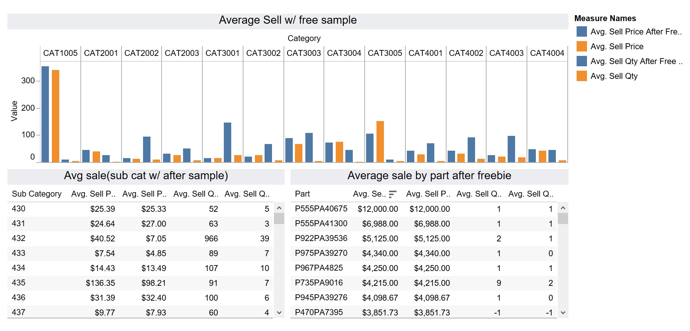

Proficient programming skills, math knowledge, statistical model and popular data analysis skill sets.
Problem solving
More effective collation and analysis of data, and Problem finding help to tackle the most viable and effective way of solving challenges.
Professional
Actually quite professional and driven individual, equipped with masters degree and related certifications.
Portfolio
What I have done with Data Science
Business Intelligence with Power BI
Retail Industry
Optimizing Workflow & Turn Management of Superintendents
Invitation Homes Capstone Project
Data Visualization with Tableau
Cresco International Project
Using Machine Learning to Predict Churn of Bank customers
Banking
Price Prediction
Website Design
Window
Photography
About me
Some thing happened.
Chengdu University of Technology
Business School
Bachelor of Arts in Accounting
University of Electronic Science and Technology of China
Information Engineering School
Bachelor of Engineering in Computer Science
Dreams start here.
China Construction Bank
Sr.Wealth Management Advisor
Managed, developed, retained VIP customers and generated profit through their lifecycle by analyzing data and building plans and sales activities.
China Minsheng Bank
Personal Finance Manager
Developed product strategies to maximize marketing share and profit, Monitored and evaluated performance of wealth management teams.
Southern Methodist University
Cox Business School
MS Business Analytics
focusing on how to better analyze business using information to gain insight. My program extends data management and business intelligence to enable the management of big data, and combines it with data analytics and business information to analyze consumer behavior, web site data, marketing data and to perform predictive analytics.
Be Part Of My Story!
Contact me
Contact me on Linkedin or Email
Helen He
Actively looking for jobs in Data Analyst | Business Analyst | Business Intelligence | Data Scientist
End-to-End Business intelligence Solution for A Manufacturing Company
This project is for a global manufacturing company, to design and deliver an end-to-end business intelligence solution. For this purpose, I designed three dashboards to fulfill those needs. The first dashboard is an executive summary dashboard that aid to help the company to track KPIs (sales, revenue, profit, returns), compare regional performance. The second dashboard is a product detail dashboard to analyze product-level trends and forecast orders and revenue. The third dashboard is a customer detail dashboard to analyze product-level trends and forecast orders and revenue.
Date: May 2020
Optimizing Workflow & Turn Management of Superintendents
Invitation Homes Capstone Project Using Python & Tableau
Project Overview
Invitation Homes is the leading owner and operator of single-family rental homes in the United States.
Invitation Homes is looking to optimize the efficiency of its 160+ superintendents that facilitate more than $80m annually making homes ready for new residents. As part of their duties, superintendents perform a variety of resident facing and non-resident facing activities that require a combination of episodic and non-episodic scheduling efforts.
Key Business Questions
Reduce downtime and drive-times through increasing workflow density
Load balance workflow as evenly as possible across superintendents
Promote “cradle to grave” turn management by superintendents
Identify how Invitation Homes might optimally schedule “pre move-out visits”
Solution Dashboards
U.S Market
Upcoming Turns Dashboard
Open Turns Dashboard Business Insights:
Managing upcoming move outs and turns from a high level
Visualizing whole upcoming process from move out to turn
Monitoring the move outs ahead, which optimize the pre-move outs visit and superintendent assignment, hence, increasing the whole process from pre-move outs to hand over and reducing the downtime of properties
Original Superintendents Assignment
This is the original superintendent assignment model that based on the geographic distance and superintendent's work volume. For this dashboard, we can see that those superintendents driving distance and driving hours are farawy from there home.
Estimating the travel time between destinations is a tricky task for many reasons; there are thousands of routes to choose from, traffic conditions that are constantly changing, road closures and accidents; all of which provide so much unpredictability into any model you could create.To predict point-to-point travel time we call the Google Maps API with the known original point and destination points. With real time traffic data, we can get a highly accurate driving hours.
Python Code for optimizing Model
Superintendents Assignment(New)
Superintendents assignment Dashboard Business Insights:
Optimal assignment
Assign superintendents based on total available superintendent in a specific market
Assign superintendents based on total available properties in a specific market
Guarantee properties assigned to most nearby superintendents based on real time driving hours
Balance superintendent’s workload, which benefit superintendent’s management and reducing human costs
Reducing driving hour of each point to point visit
Visualizing whole upcoming process from move out to turn
Key Business Insights
Real time assignment, reduced 53% (46 hours) driving hours and 66%(3116 Miles) driving miles from point to point when compared with original assignment of seven superintendents
Helping to make property acquisition and management decision, such as Fly properties or isolated properties
Reducing the time pre-occupy property, which generate additional rental days and revenue
Date: Apr 2020
Data Visualization with Tableau
Sales Management for Cresco International
Business Challenges
Analyze 3 years of point of sales(POS) data from a B2B retail company to create different pattern tables and track product insights through visualization create an interactive dashboard analytics soution.
Dashboard Solutions
Profit by Category
Analyzing the profit by product category and sub-category to identify the profitable categories and products.
Profit Trends by Category
Analyzing the profit trend by product category from 2015 to 2018 to forecast the proft trend in the next quarter.
Returns by Category
Returns is a main factor that impact the sales and profit. Analyzing the return quality distribution that help sales management team to maximum total profit.

Free Sample %
Free sample is a common strategy of promotion. Analyzing sales data related to free sample customer helps to track promtion activities that benefit optimal market strategies.
Date: Oct 2019
Using Machine Learning to Predict Churn of Bank customers
Improve Customer Service by Predicting Churn Probability
1.Introduction
Customer churn, also known as customer attrition, occurs when customers stop doing business with a company. The companies are interested in identifying segments of these customers because the price for acquiring a new customer is usually higher than retaining the old one.
I will create prediction models using machine learning to classify if a customer is goint to churn or not. We will do all of that above in Python. Model for predicting make customer service easier to target customer and in their efforts to prevent churn.
2.Exploratory Data Analysis (EDA)
The purpose of doing an Exploratory Data Analysis (EDA) is to understand the data we have which in turn will help us to build a good solution.
Observations can be made from EDA:
The churn proportion is around 20%
They youngest client(s) is 18 years old while the oldest is 92.
There are no negative balance in the dataset. The least cash anyone has is 0.
The most used product is 'product 1' while the least used one is 'product 4'
More than 70% of the clients have a credit card.
There is no gender gap. It is pretty well balanced.
There is a problem in Germany. Almost half of the clients in Germany end up leaving.
There are more women leaving the bank than men.
All users of product 4 have churned, an indication that it is not a good product!! Also most users of product 3 end up leaving too.
The clients with the highest account balances churned.
Senior citizens are less likely to leave but also half of them have 0 in their account.
3.Churn Prediction
We are going to try out different algorithms and pick the one with the best performance. To measure a model's performance, we will use the Area Under the Curve(AUC) of the test set. We will also use the confusion matrix to gain a more nuanced understanding of its performance.
Moreover, we will look at the precision and recall of the best performing models to decide which model to use depending on the bank's needs.
4.Business insights
Most users of product 1 and 2 end up churning. This is a sign that something is wrong with them. In cases like this, a market research would be helpful in finding out what is wrong with the two products which can lead to an implementation of better products that customers would enjoy and end up not churning/leaving the bank.
The churn rate among women is high. A possible explanation to this is that there is a mismatch between the financial products and services offered by the bank and the needs of women clients.
5.Conclusion
Three different techniques were used when fitting the models. The first method consisted of fitting different algorithms, picking the best performing one, and then using GridSearchCV to tune the hyperparameters of that model. The second method used the stacking ensemble method which combines a set of models.
To decide which model is appropriate mainly depends on what the bank wants. If they mostly care about finding churners, and not so much about the false positives, then the ensemble method would work best.
Lastly, the Random Forest and XGBoost models did well in capturing non-churners. They had very few false positives but they didn't do well in capturing churners. This can be caused by the lack of clear indicators of churners. A way to improve the models would be to include more features like the number of customer service calls the customer made, marital status, employment status, etc.


 Superintendents Assignment(New)
Superintendents Assignment(New)